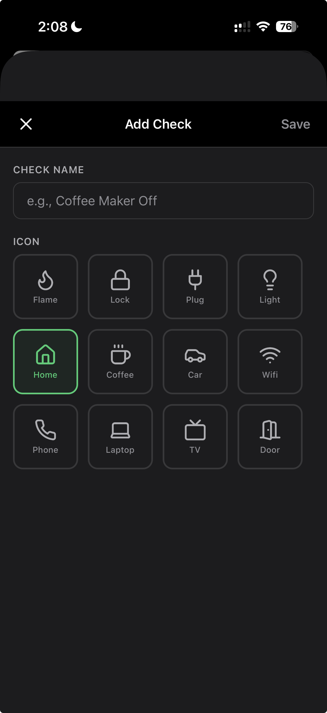
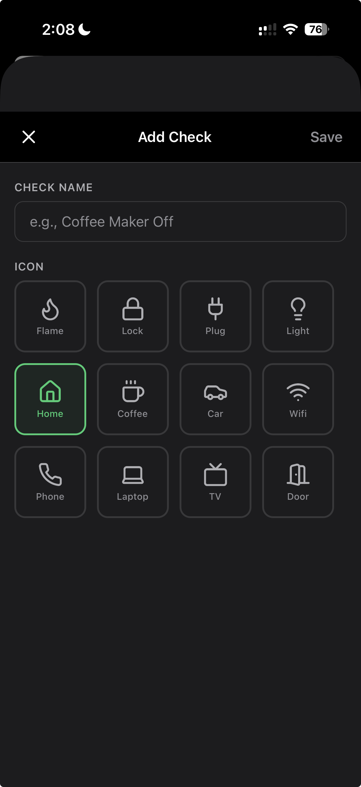
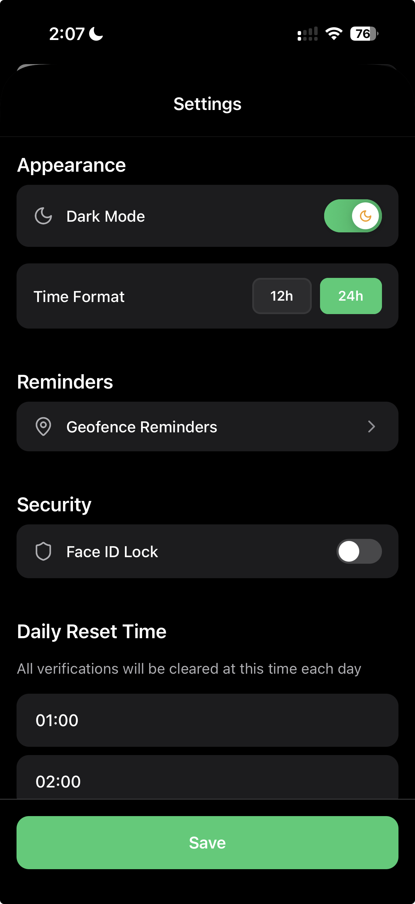
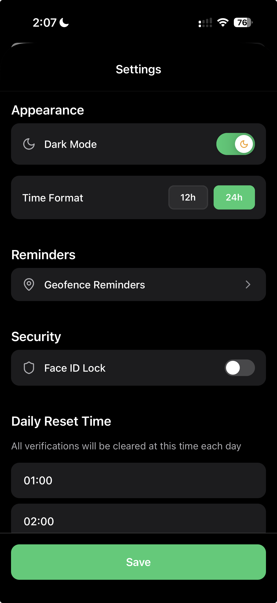

PROOF
Stop turning the car around.
Forensic visual evidence that you locked the door.
 

 

Forensic Watermarks
Proof stamps every photo with the Date, Time, and GPS Location. Create irrefutable evidence that you verified your home security.
Designed for Anxiety
Standard to-do lists don't work for checking OCD. You need visual proof. Our "Tamper-Evident" photos stop the panic loop instantly.
Share with Partner
Stop the arguments. Text a verified photo to your spouse or partner to prove the garage is closed and the iron is off.
Privacy First
We are an offline-first utility. Your photos and location data never leave your device.